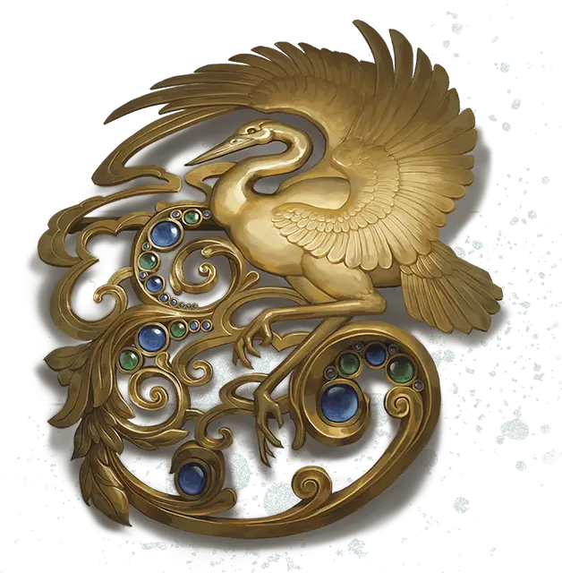

Брошь маскарада
Masquerader's Brooch
Чудесный предмет, редкий (требуется настройка)

Рекомендованная стоимость 4 000 ЗМ
Брошь маскарада бывает разных форм и размеров, но всегда выглядит слегка потускневшей.
Пока вы носите эту брошь, вы получаете следующие преимущества.
Иллюзорный наряд. Пока вы носите или держите брошь, можете Бонусным действием наложить магическую иллюзию на свою одежду, доспехи, оружие, снаряжение и другие вещи, которые имеете при себе. Иллюзия длится 1 час и оканчивается досрочно, если контакт с брошью прерывается. Каждый раз при использовании этого преимущества вы определяете масштаб и характер иллюзии: изменения могут быть как незначительными — например, поменять цвет вашей одежды, — так и обширными — например, заставить доспехи выглядеть вечерним платьем, а оружие в ножнах — атласной лентой.
Изменения, созданные этой иллюзией, не выдерживают физической проверки. Существо может действием Изучение совершить проверку Интеллекта (Расследование) Сл 13, чтобы осмотреть ваш внешний облик и распознать иллюзию.
Изменчивая личина. Пока вы носите или держите брошь, можете действием Магия сотворить с её помощью заклинание Смена обличья (только вариант Изменение внешности; без Концентрации).